Introduction¶
Why do we even have Parachains?¶
- Scalability
PoS scales much better compared to PoW.
Since we are not spending efforts in mining, block time and agreement could happen much faster.
However, consensus on a PoS chain requires full agreement of 2/3+ of the validator set for everything that occurs at Layer 1: all logic which is carried out as part of the blockchain's state machine. This means that everybody still needs to check everything. Furthermore, validators may have different views of the system based on the information that they receive over an asynchronous network, making agreement on the latest state more difficult.
Parachains are an example of a sharded protocol. Rather than requiring every participant to check every transaction, we require each participant to check some subset of transactions.
- Specialization
Being able to specialize on a problem gives the creator and users more leverage
Why do we care? What are we trying to do?¶
The Primary purpose of polkadot is to provide security to parachains.
By providing security to parachains we mean - validating - authoring and - finalizing parachain blocks.
To do these task we need parachain protocol. It describes how relay chain nodes will talk to parachain nodes and include parachain blocks into relay chain.
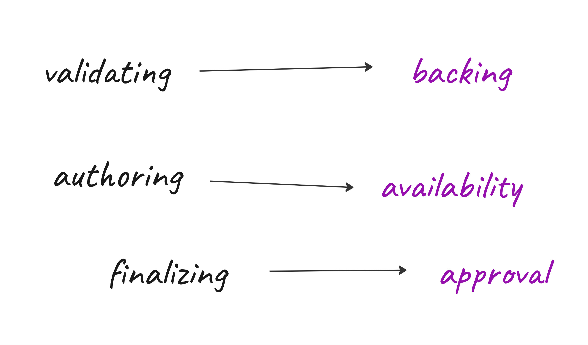
How do I know if a parachain block is authored?¶
Relay chain blocks have this information that we call inherents. For example we do store timestamp and babe slot as inherents in relay chain blocks.
One such inherent is parachn0, which is for parachain inherent data. It is through this parachain inherent data that we are going to tell which parachain blocks are authored.
https://github.com/ChainSafe/gossamer/blob/b1ecbf3c51ecd0dc0765300c13f4361334f1e04f/lib/babe/inherents/parachain_inherents.go#L452-L462
// ParachainInherentData is parachains inherent-data passed into the runtime by a block author.
type ParachainInherentData struct {
// Signed bitfields by validators about availability.
Bitfields []uncheckedSignedAvailabilityBitfield `scale:"1"`
// Backed candidates for inclusion in the block.
BackedCandidates []backedCandidate `scale:"2"`
// Sets of dispute votes for inclusion,
Disputes multiDisputeStatementSet `scale:"3"`
// The parent block header. Used for checking state proofs.
ParentHeader types.Header `scale:"4"`
}
What is Parachain Protocol¶
As a highly simplistic view, you can think of parachain protocol as a system that takes parachain blocks from parachain nodes and gives parachain inherents to be put in relay chain.
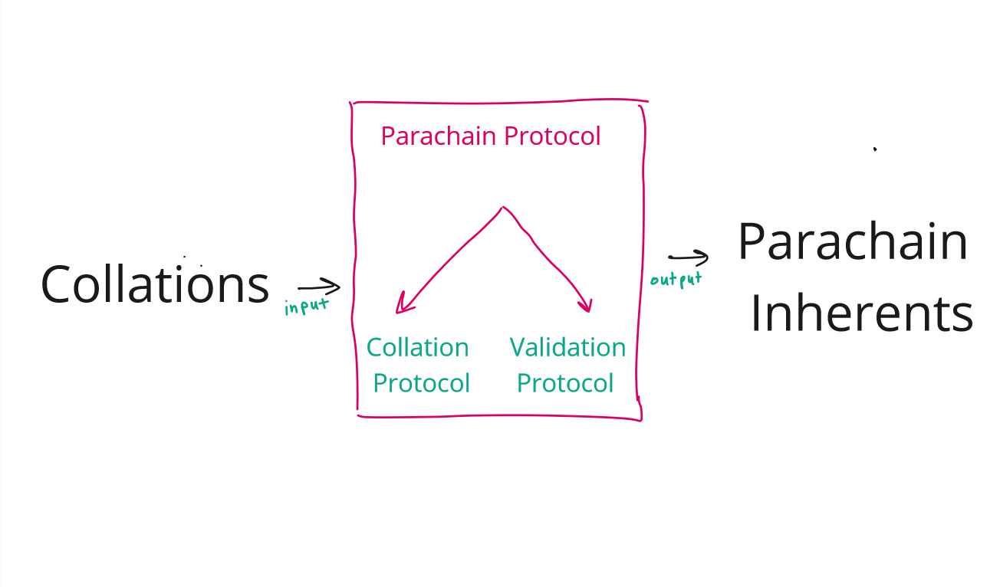
// Collation represents a requested collation to be delivered
type Collation struct {
CandidateReceipt CandidateReceipt `scale:"1"`
PoV PoV `scale:"2"`
}
Where is Parachain Protocol running? Relay Chain Nodes.
So, where are these relay chain nodes running parachain protocol get parachain blocks from parachain nodes? Using some special nodes which are part of both the parachain and the relay chain. Let's call these special nodes :fire: Collators :fire:
Collators are at least light nodes in the relay chain and full node in the parachain.
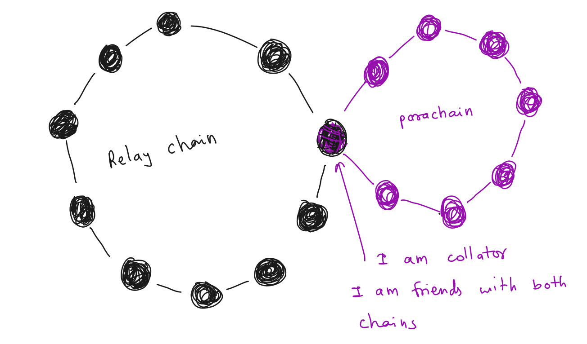
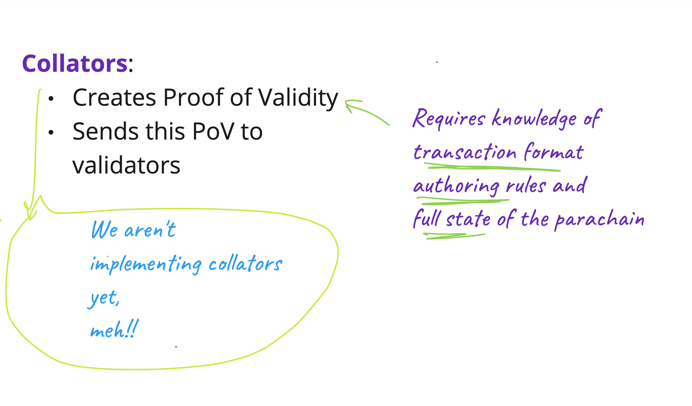
Inclusion Pipeline¶
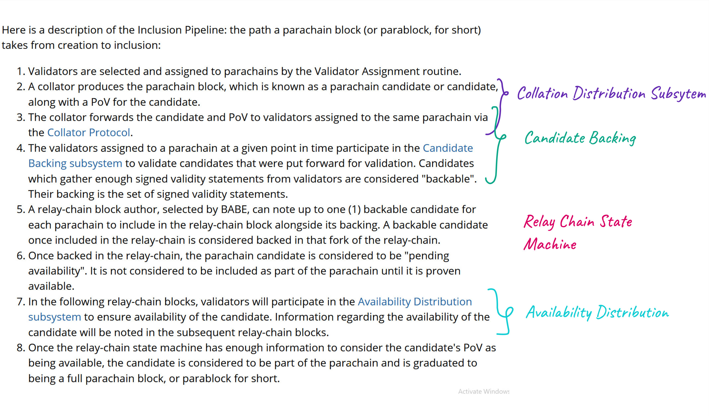
Here is a description of the: the path a parachain block (or parablock, for short) takes from creation to inclusion:
-
A subset of Validators are selected and assigned to parachains by the Validator Assignment routine (Para validators).
-
A collator produces the parachain block, which is known as a parachain candidate or candidate, along with a PoV for the candidate.
-
The collator forwards the candidate and PoV to validators assigned to the same parachain via the Collator Protocol.
-
The validators assigned to a parachain at a given point in time participate in the Candidate Backing subsystem to validate candidates that were put forward for validation. Candidates which gather enough signed validity statements from validators are considered "backable". Their backing is the set of signed validity statements.
-
A relay-chain block author, selected by BABE, can note up to one (1) backable candidate for each parachain to include in the relay-chain block alongside its backing. A backable candidate once included in the relay-chain is considered backed in that fork of the relay-chain.
-
Once backed in the relay-chain, the parachain candidate is considered to be "pending availability". It is not considered to be included as part of the parachain until it is proven available.
-
In the following relay-chain blocks, validators will participate in the Availability Distribution subsystem to ensure availability of the candidate. Information regarding the availability of the candidate will be noted in the subsequent relay-chain blocks. (PoV)
-
Once the relay-chain state machine has enough information to consider the candidate's PoV as being available, the candidate is considered to be part of the parachain and is graduated to being a full parachain block, or parablock for short.
Lifecycle of a candidate¶
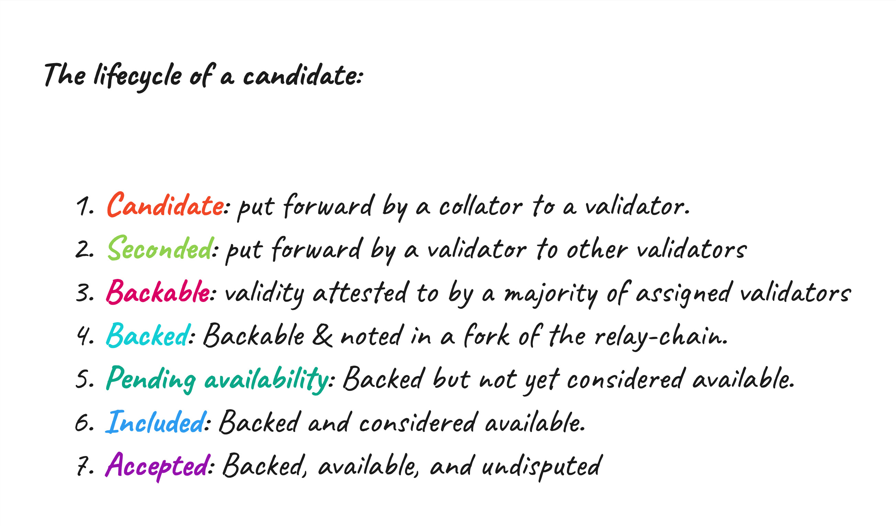
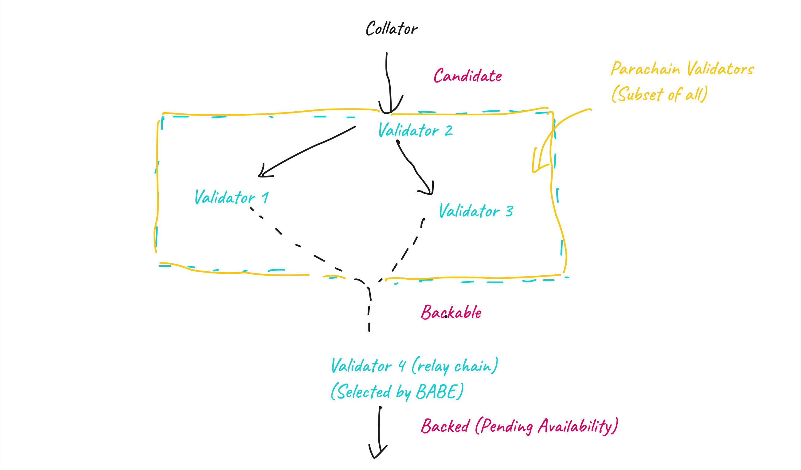
Candidate Validation¶
- Run on Parachain Runtime
// ValidateBlock validates a block by calling parachain runtime's validate_block call and returns the result.
func (in *Instance) ValidateBlock(params ValidationParameters) (
*ValidationResult, error) {
...
encodedValidationResult, err := in.Exec("validate_block", buffer.Bytes())
...
return &validationResult, nil
}
type ValidationHost interface {
// ValidateBlock validates a block by calling parachain runtime's validate_block call and returns the result.
ValidateBlock(params ValidationParameters) (*ValidationResult, error)
}
Approval Process¶
Once a parablock is considered available and part of the parachain, it is still "pending approval".
Why Approval¶
The validators in the parachain-group (known as the "Parachain Validators" for that parachain) are sampled from a validator set which contains some malicious members. So, Parachain Validators for some parachain may be majority-dishonest, which means that (secondary) approval checks must be done on the block before it can be considered approved.
The Parachain Validators for a given parachain are sampled from an overall validator set which is assumed to be up to <1/3 dishonest - meaning that there is a chance to randomly sample Parachain Validators for a parachain that are majority or fully dishonest and can back a candidate wrongly.
A parablock's failure to pass the approval process will invalidate the block as well as all of its descendants. However, only the validators who backed the block will be slashed, not the validators who backed the descendants.
Approval Process Pipeline¶
- Parablocks that have been included by the Inclusion Pipeline are pending approval for a time-window known as the secondary checking window.
- During the secondary-checking window, validators randomly self-select to perform secondary checks on the parablock.
- These validators, known in this context as secondary checkers, acquire the parablock and its PoV, and re-run the validation function.
- The secondary checkers gossip the result of their checks. Contradictory results lead to escalation, where all validators are required to check the block. The validators on the losing side of the dispute are slashed.
- At the end of the Approval Process, the parablock is either Approved or it is rejected.
Approval Process can be running for many parachain blocks at once.
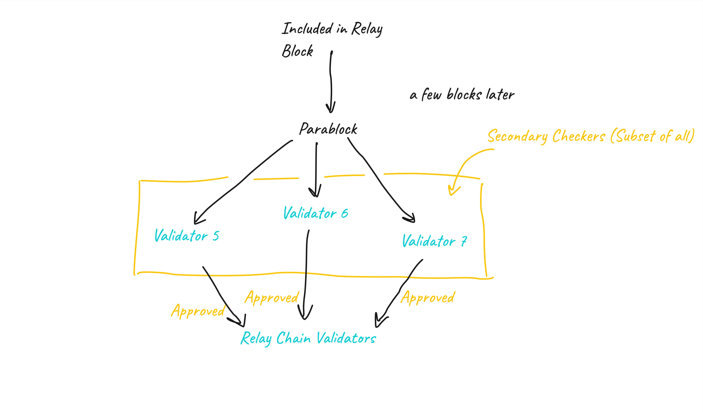
Collator Protocol¶
The Collator Protocol implements the network protocol by which collators and validators communicate. It is used by collators to distribute collations to validators and used by validators to accept collations by collators.
It serves as a bridge between a collator and a validator.
- Collators are only collating on a single parachain
Approval Process¶
The Approval Process is the mechanism by which the relay-chain ensures that only valid parablocks are finalized and that backing validators are held accountable for managing to get bad blocks included into the relay chain.
We can deal with a bad parachain block as long as it doesn't get finalized.
https://paritytech.github.io/polkadot-sdk/book/runtime/scheduler.html
Scheduler Pallet¶
The Scheduler module is responsible for two main tasks: - Partitioning validators into groups and assigning groups to parachains. - Scheduling parachains for each block
It aims to achieve these tasks with these goals in mind:
- It should be possible to know at least a block ahead-of-time, ideally more, which validators are going to be assigned to which parachains.
- Parachains that have a candidate pending availability in this fork of the chain should not be assigned.
- Validator assignments should not be gameable. Malicious cartels should not be able to manipulate the scheduler to assign themselves as desired.
- High or close to optimal throughput of parachains. Work among validator groups should be balanced.
Availability Cores¶
The Scheduler manages resource allocation using the concept of "Availability Cores".
- There will be one availability core for each lease holding parachain, and a fixed number of cores used for multiplexing on-demand parachains.
- Validators will be partitioned into groups, with the same number of groups as availability cores.
- Validator groups will be assigned to different availability cores over time.
They could be in one of two states: - Free can have a lease holding or on-demand parachain assigned to it for the potential to have a backed candidate included. - Occupied After backing, the core enters the occupied state as the backed candidate is pending availability. An occupied core becomes free again, ones the backed candidate becomes available.
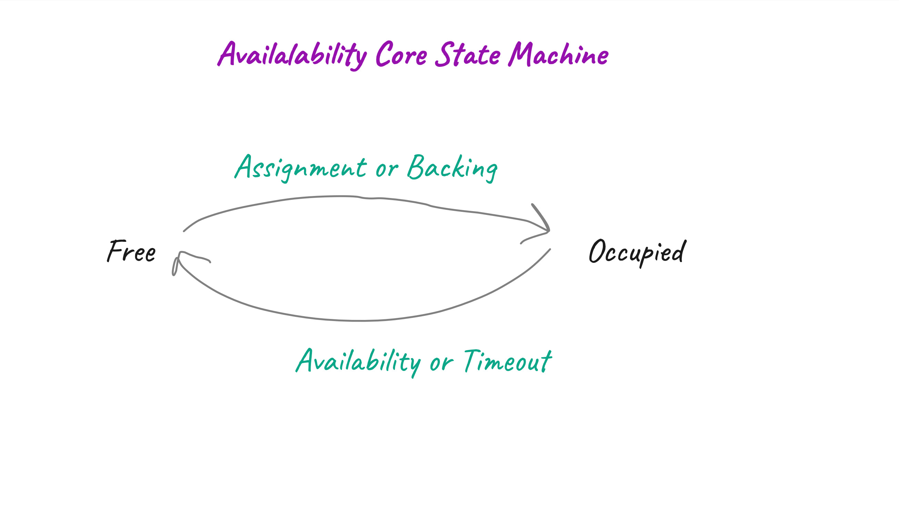
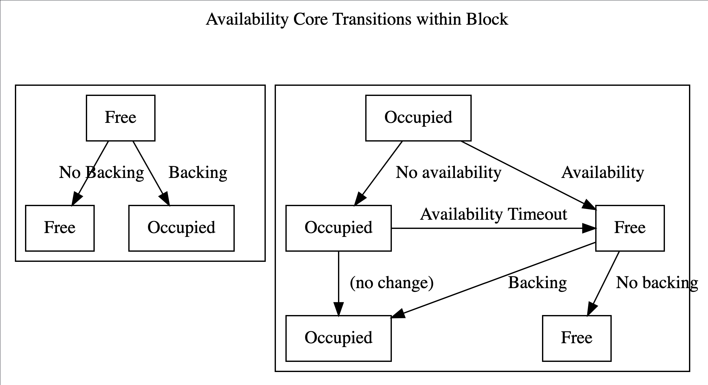
Validator groups rotate across availability cores in a round-robin fashion, with rotation occurring at fixed intervals. The i'th group will be assigned to the (i+k)%n'th core at any point in time, where k is the number of rotations that have occurred in the session, and n is the number of cores. This makes upcoming rotations within the same session predictable.
Availability Subsystems¶
The availability subsystems are responsible for ensuring that Proofs of Validity of backed candidates are widely available within the validator set, without requiring every node to retain a full copy.
They accomplish this by - broadly distributing erasure-coded chunks of the PoV, - keeping track of which validator has which chunk by means of signed bitfields.
They are also responsible for reassembling a complete PoV when required, e.g. when an approval checker needs to validate a parachain block.
Availability Distribution¶
Responsible for distribution availability data to peers. Availability data are chunks, PoVs and PersistedValidationData (input for candidate validation).
- Respond to network requests requesting availability data by querying the Availability Store.
- Request chunks from backing validators to put them in the local Availability Store whenever we find an occupied core on any fresh leaf, this is to ensure availability by at least 2/3+ of all validators, this happens after a candidate is backed.
- Fetch PoV from validators, when requested via FetchPoV message from backing (pov_requester module).
Availability Recovery¶
This subsystem is responsible for recovering the data made available via the Availability Distribution subsystem, neccessary for candidate validation during the approval/disputes processes. Additionally, it is also being used by collators to recover PoVs in adversarial scenarios where the other collators of the para are censoring blocks.
According to the Polkadot protocol, in order to recover any given AvailableData, we generally must recover at least f + 1 pieces from validators of the session. Thus, we should connect to and query randomly chosen validators until we have received f + 1 pieces.
There are various optimisations which avoid querying all chunks from different validators and/or avoid doing the chunk reconstruction altogether.
Strategies: - FetchFull Request full available data from the validators in the backing group to which node is already connected. - FetchChunks All validators would be tried. Worst performing strategy but most comprehensive. - FetchSystematicChunks
Bitfield Distribution and Signing¶
Validators vote on the availability of a backed candidate by issuing signed bitfields, where each bit corresponds to a single candidate. These bitfields can be used to compactly determine which backed candidates are available or not based on a 2/3+ quorum.
- Gossip system
- Accept bitfield relevant to our view and distribute to other peers when relevant to their view
- Accept and distribute only one bitfield per validator.
Provisioner¶
This subsystem is responsible for providing the necessary data to all potential block authors (BABE). This subsystem provides the data for parachain inherents.
Provisionable Data¶
- Backed Candidates
The block author can choose 0 or 1 backed parachain candidates per parachain.
The only constraint is that each backable candidate has the appropriate relay parent. However, the choice of a backed candidate must be the block author's. The provisioner subsystem is how those block authors make this choice in practice.
- Signed Bitfields
Attestation from validators that candidates are available
- Misbehavior reports
Self-contained proofs of misbehavior by a validator or group of validators.
Misbehavior reports become inherents which cause dots to be slashed.
Block authors are not forced to put these reports in inherents. But because slashing period is long, we expect to encount an honest validator eventually.
ex, double spending
- Dispute Inherent
The dispute inherent is similar to a misbehavior report in that it is an attestation of misbehavior on the part of a validator or group of validators. Unlike a misbehavior report, it is not self-contained: resolution requires coordinated action by several validators.
Will cause slashing too.
ex, approvers found invalid block.
The tuple (SignedAvailabilityBitfields, BackedCandidates, ParentHeader) is injected by the ParachainsInherentDataProvider into the inherent data. From that point on, control passes from the node to the runtime.
Architecture¶
Subsystems¶
Parachain protocol has been divided into multiple subsytems that run in parallel.
Subsystems are long-lived worker tasks that are in charge of performing some particular kind of work.
Subsystems communicate with each other through this thing called Overseer. Every time we have to send a message to a other nodes, we do that through a subsytem called network bridge.
Primary benefit of having this subsystems is that we would be able to process many candidate at the same time, without getting blocked in the pipeline.
All the work will happen on top of a relay block, we call it relay parent. Goal of determining when to start and conclude work relative to a specific relay-parent is common to most subsystems. Overseer acts as a heartbeat to the system and provides this relay-parent signal for all subsystems to do work relative to it.
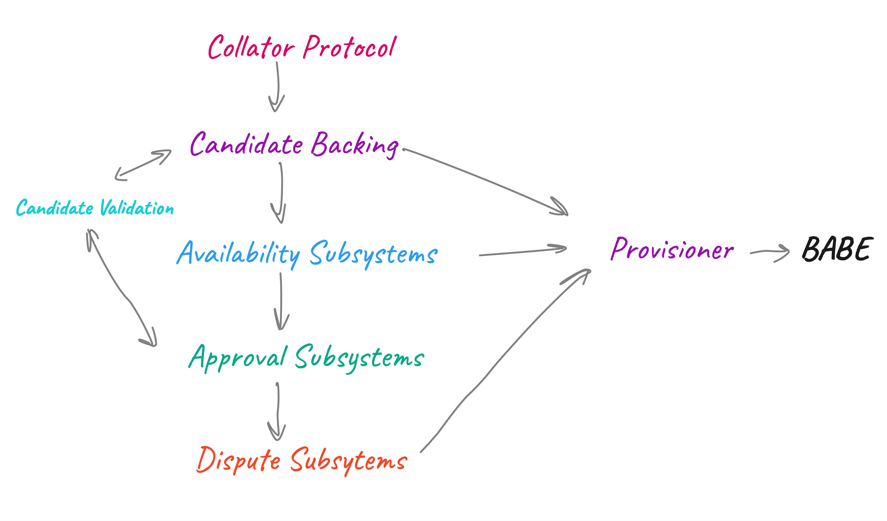
What do I need to become a Validator?¶
-
Actually everything in parachain protocol (backing, availability, approval)
-
Since disputes are a rare occurence, we could do without it and prioritize it later.